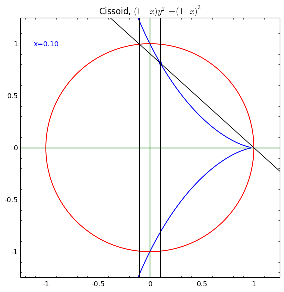
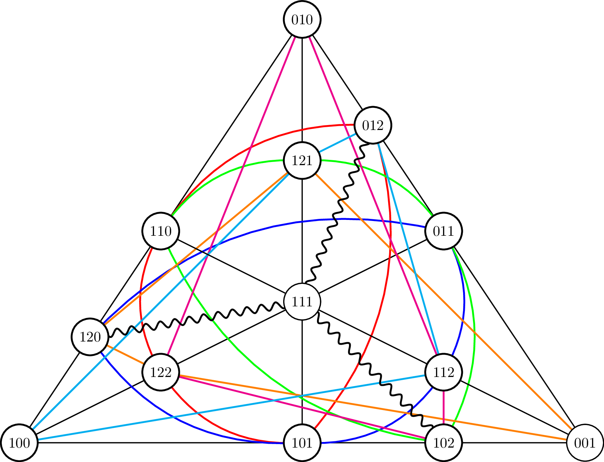

Fredrik Meyer
I have a PhD in Algebraic Geometry. My advisor was Jan Christophersen.
If you want to contact me, add me on Twitter, message me on Facebook.
Studentseminar vår 2014
Oversiktsside for studentseminaret vår 2014.
Degenerations of G(3,6)
My master thesis.
The Banach-Tarski Paradox
My project for MAT2000.
Commutative Algebra Notes
A short summary of the content of Atiyah-MacDonald's book on commutative algebra with an emphasis on examples.
Manifolds notes 2014
I take the course this year (2014), and here are the notes so far. Please tell me of any mistakes.
Algebraic stacks 2013
These are notes from a course on algebraic stacks that I attended during the fall semester 2013. The lectures followed a draft version of the book "Algebraic spaces and stacks" by Martin Olsson, and were held by Paul Arne Østvær.
Algebraic Geometry buzzlist
A list of definitions and theorems often used in algebraic geometry. Still growing.
Algebraic groups and moduli theory
My (unfinished) notes for a course I'm following on algebraic groups and moduli theory. We're closely following Mukai's book. Lectures by Jan Christophersen.
Computing invariant rings in Macaulay2
A short note with a recipe for computing invariant rings in Macaulay2.
Computing cokernels of integer matrices
A short note on how to compute the cokernel of an integer matrix A, with an implementation in Python (last part is very sketchy).
Representation theory
These are lecture notes from MAT4270.
MATLAB-koder
Liten samling med nyttige MATLAB-koder.
Exercises
I solve some exercises in some books and type the answers.
Oppgaver i MAT2500
Løsningsforslag til oppgaver i kurset MAT2500. Med oppgavetekst + løsning.
CV
CV (in Norwegian).
Recommended articles
Hyperlinks
Some mandatory assignments.
Some math related YouTube videos
Courses I've taken.

Here's a picture of PP_3^2, the projective plane of order 3.

Quotes
"[...] properties of subvarieties of toric varieties, which are undoubtedly more interesting objects than the frigid toric crystals." (V.I. Danilov in "The Geometry of Toric Varieties")
"Before functoriality, people lived in caves." (Brian Conrad)
Populærartikler om matematikere
For videregåendeelever
Grafer og funksjoner Kort innføring
Kort om eksponentialfunksjoner
Superduperkort innføring i Geogebra
Lineær regresjon i Geogebra
|